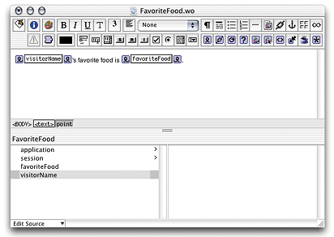
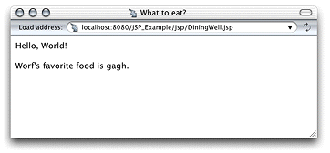

| PATH |

In this section, you'll expand the JSP_Example project to include
The FavoriteFood component contains two attributes: visitorName and favoriteFood. When
the DiningWell workhorse servlet receives a request, it passes two
strings to the FavoriteFood component. The FavoriteFood component
then uses those string to render its HTML code.
<%-- DiningWell.jsp --%>
<%@ taglib uri="/WOtaglib" prefix="wo" %>
<HTML>
<HEAD>
<TITLE>Using Two Components</TITLE>
</HEAD>
<BODY>
<wo:component className="Hello">
</wo:component>
<P><P>
<wo:component className="FavoriteFood" bodyContentOnly="true">
<wo:binding key="visitorName" value='<%= "Worf" %>' />
<wo:binding key="favoriteFood" value='<%= "gagh" %>' />
</wo:component>
</BODY>
</HTML> Note
that in this case the bodyContentOnly attribute
of the <wo:component> tag
is set to true (this
is the default, so you don't need to specify a value for it).
This allows you to define the FavoriteFood component as "Full
document" (the default setting in WebObjects Builder) instead
of "Partial document." This way, the component can be viewed
as a Web page on its own and as a component within a JSP page.
For
faster processing, you can set the bodyContentOnly attribute
to false if you are certain
that the component only includes the <BODY> tag
and not the <HTML> tag.
DiningWell.jsp in
the JSP_Example/Servlet Resources/jsp directory.visitorName and favoriteFood String
keys.Figure 3-4 The DiningWell component in WebObjects Builder
When
you're done FavoriteFood.java should
look like Listing 3-1.
Listing 3-1 FavoriteFood.java
import com.webobjects.foundation.*;
import com.webobjects.appserver.*;
import com.webobjects.eocontrol.*;
import com.webobjects.eoaccess.*;
public class FavoriteFood extends WOComponent {
protected String visitorName;
protected String favoriteFood;
public FavoriteFood(WOContext context) {
super(context);
}
public String visitorName() {
return visitorName;
}
public void setVisitorName(String newVisitorName) {
visitorName = newVisitorName;
}
public String favoriteFood() {
return favoriteFood;
}
public void setFavoriteFood(String newFavoriteFood) {
favoriteFood = newFavoriteFood;
}
}If you're using Tomcat, you can view the new page in your browser with this URL
http://localhost:8080/JSP_Example/jsp/DiningWell.jsp
The Web page should look like Figure 3-5.
Figure 3-5 The output of DiningWell.jsp
This is the HTML code your Web browser receives:
<HTML>
<HEAD>
<TITLE>What to eat?</TITLE>
</HEAD>
<BODY>
Hello, World!
<P><P>
Worf's favorite food is gagh.
</BODY>
</HTML>